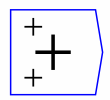

Add multiple numbers together.
The input ports allow multiple wires, which are all summed. If an input port is unwired, it is equivalent to setting it to zero.
The operator can be placed on the canvas in two ways: